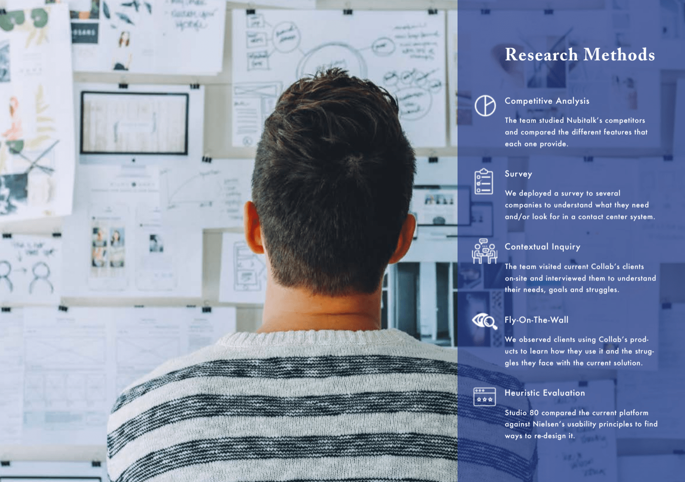
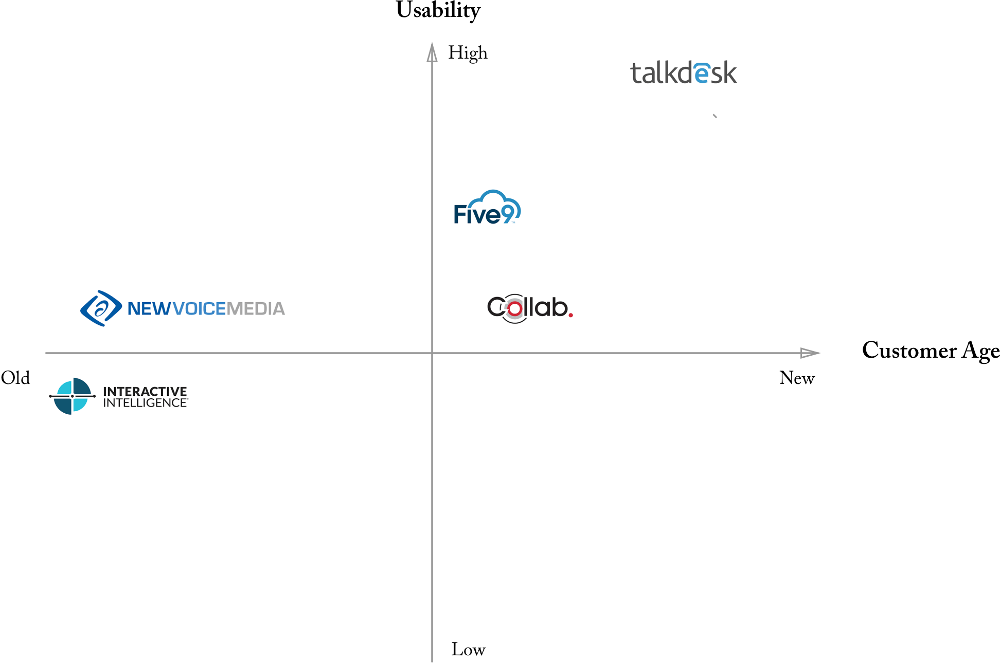
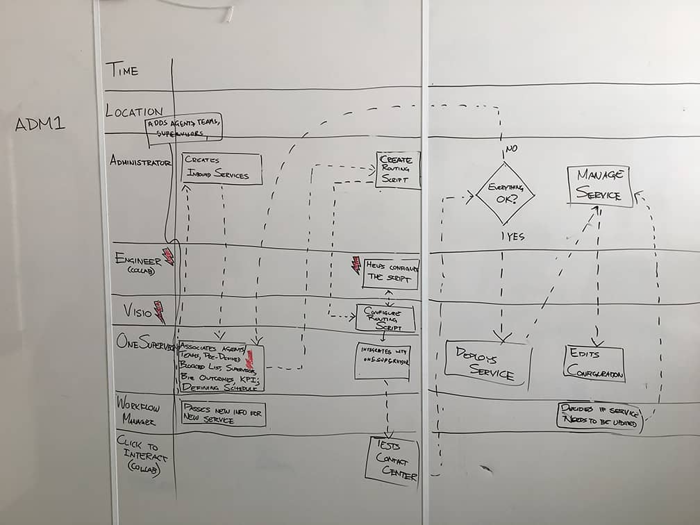
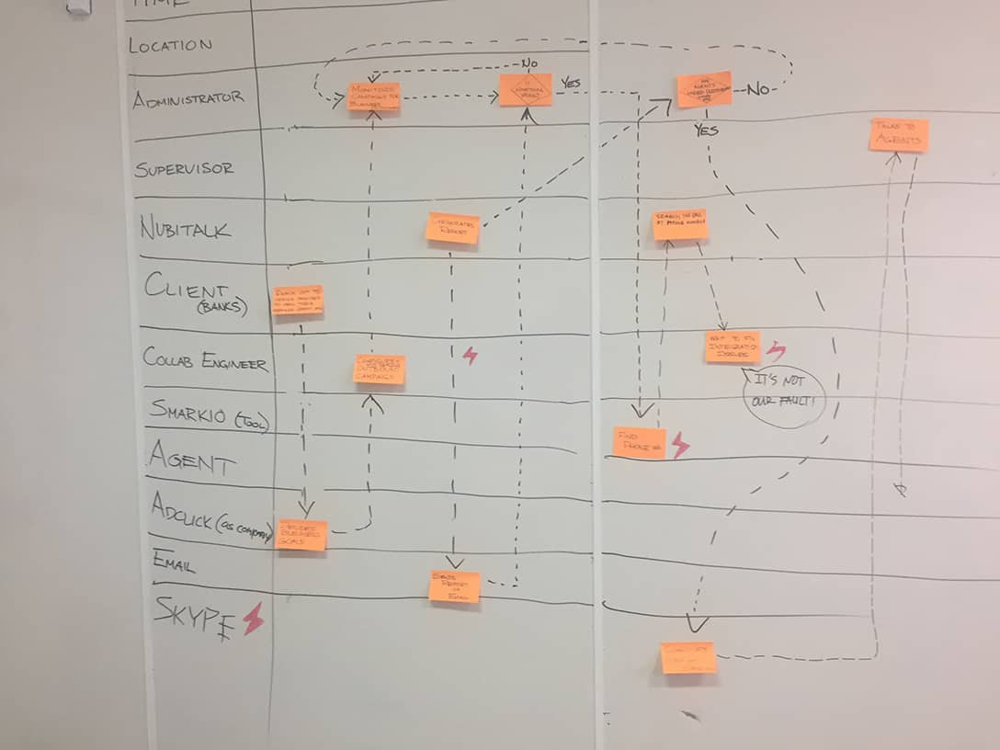
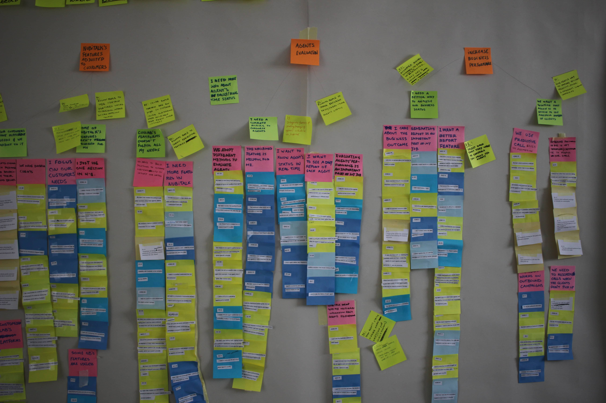

Client
Collab, a European Multimedia Contact Center Provider based out of Lisbon with clients all around the globe.
Challange
To redesign and improve the user experience of Collab's cloud based contact center platform Nubitalk.
Research Approach
Combining multiple research techniques
At the outset of this project, we sought to understand how contact centers worked and what role technology played in enabling an effective operation. More specifically, we wanted to know what technologies are used, what processes they support, and what needs are being met by each technology. We conducted competitive analysis to see where our client's software stands and what features competitors offers. We used user interviews, contextual inquiries, job shadowing, fly on the wall observations to aid us in understanding the context of a contact center along with the needs of the stakeholders. We also conducted a heuristics evaluation of the current state of the platform to identify opportunities areas.

Research Synthesis
Competitive Analysis
We looked at both the enterprise contact center system providers and cloud based contact center system providers to understand how Collab's solution measure up to the competition in terms of usability, scope and price.

Stakeholder Map
Based on our research, we identifies each stakeholder and communication between them.
Sequence Flow Diagramming
Once, we identified all the stakeholders, we moved on to create sequence flows for each stakeholder to understand thier workflow and identify breakdowns and opprotunity areas.


Affinity Diagramming
We created an affinity diagram from all of our notes from the interviews, job shadowing and observations, we gave us a deep understanding of the work performed by the stakeholders involved (including the key tasks, what situations trigger an action and what information was necessary at the moment).

opportunities areas & Concepts
Concepts cannot be disclosed due to NDA, but please reach out to me @ nneeraj@andrew.cmu.edu for more details.
Iterative Prototyping and Validation
We will be resuming the project this fall semester, where our focus will be to iteratively create prototypes and their validation with all the stakeholders. We will be delivering the final product at the end of fall Semester(early December)
other projects